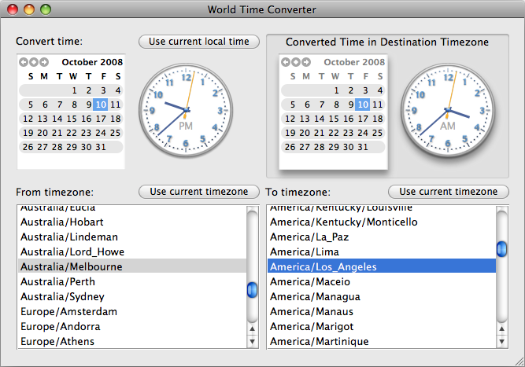

Please note: this article is part of the older "Objective-C era" on Cocoa with Love. I don't keep these articles up-to-date; please be wary of broken code or potentially out-of-date information. Read "A new era for Cocoa with Love" for more.
WorldTimeConverter: Dates and timezones in Cocoa
Recently, I searched for a world time converter — one that would handle future dates as well as the current time. There are web versions but I didn't find a genuine Mac OS X application that matched my desires. How hard could it be? The answer is 1 subtraction — provided you can find the right values to subtract. Read on and I'll show you how it's done.
Update 2008-10-15: The original project contained a timing error that could cause a crash on startup. I've now fixed this bug in the project. See the comments for more details.
Introduction
There are at least a few Mac OS X programs that will show the current time around the world but I couldn't find one that specialized in source to destination timezone conversion of an abitrary time (apologies if you have released one — I didn't find it).
This is a screenshot of the application running. You can download the Xcode 3.1 project for WorldTimeConverter here.
Dates and timezones in Foundation
All Cocoa programmers should be familiar with the class NSDate. It specifies a point in time and in conjunction with NSCalendar can give year, month, day, hour, minute, second and other values.
Normally, NSDate values are implicitly associated with your locale timezone (current timezone). However, an NSDate can be within any timezone — so an NSDate only has truly universal meaning if you further specify the timezone in which it applies.
A timezone in Cocoa is represented by an instance of NSTimeZone. Broadly speaking, NSTimeZone objects encapsulate an offset from Greenwich Mean Time (GMT) and hold information about potential daylight savings zones.
The truly valuable information, the data which makes world time conversion possible, comes from two class methods on NSTimeZone — the knownTimeZoneNames method and the timeZoneWithName: method. Between the two methods, you can obtain access to a nearly complete list of world time zones.
NSArray *timezoneNames = [NSTimeZone knownTimeZoneNames];
timezones = [[NSMutableArray arrayWithCapacity:[timezoneNames count]] retain];
for (NSString *name in
[timezoneNames sortedArrayUsingSelector:@selector(compare:)])
{
[(NSMutableArray *)timezones addObject:[NSTimeZone timeZoneWithName:name]];
}With this array of timezones available, you can easily select a source and destination timezone. A conversion of an NSDate from the source to the destination then looks like this:
NSInteger sourceSeconds =
[sourceTimeZone secondsFromGMTForDate:date];
NSInteger destinationSeconds =
[destinationTimeZone secondsFromGMTForDate:date];
NSTimeInterval interval = destinationSeconds - sourceSeconds;
return
[[[NSDate alloc]
initWithTimeInterval:interval sinceDate:date]
autorelease];where date is the specified time in the source timezone and sourceTimeZone and destinationTimeZone are valid NSTimeZone objects.
This approach has one subtle failing: the offset of both timezones is evaluated at the source date. If the destination changes daylight savings time in the selected time between the source date and the destination's date, then the daylight savings time will be wrong.
NSDatePicker
The user interface for the application is mostly handled by NSDatePicker.
Performing date and time selection became far more enjoyable in Mac OS X 10.4, when Apple introduced the NSDatePicker which handles both the calendar and the clock in the above screenshot.
Adjusting the time is a little fiddly (you have to click exactly on the hands of the clock to drag them around) but a visual control that outputs an NSDate is far nicer than the previous text entry with date formatting.
The clock is disabled by default in Interface Builder. You must enable "hour and minute" or "hour, minute and second" selection to display the clock.
Organising the controller class
Ordinarily, I despise programs where all the control functionality has been unceremoniously dumped into one class. In this case, I couldn't find a good way to decouple the four controls in the window — they all read, write or affect the "date" value which is contained by the DateController.
An interesting point: I have chosen to store the selection from the two tables as an NSIndexSet, rather than the NSTimeZone that is shown in the table. This is because the NSArrayControllers report their selection in this manner. Instead of overriding the getter and setter for the selection binding to convert from the NSIndexSet to the NSTimeZone, it is simplest to just store the value NSArrayController hands over and defer conversion from index to content object.
So instead of overrides for the getter and setter of both sourceTimezoneIndex and destinationTimezoneIndex, all we need are the following lines when the selected timezones are finally required in the destinationDate method:
NSTimeZone *sourceTimeZone =
[timezones objectAtIndex:[sourceTimezoneIndex firstIndex]];
NSTimeZone *destinationTimeZone =
[timezones objectAtIndex:[destinationTimezoneIndex firstIndex]];Conclusion
Writing a world time conversion program is simple. Really simple, in fact; I thought it would be harder than this. All of the data and controls are provided in Cocoa by default — it's really just a matter of connecting it together.
My apologies to skilled programmers for whom this post was too obvious. I promise that next week will be an obscure, convoluted mess.
Sliding UITextFields around to avoid the keyboard
Synthesizing a touch event on the iPhone